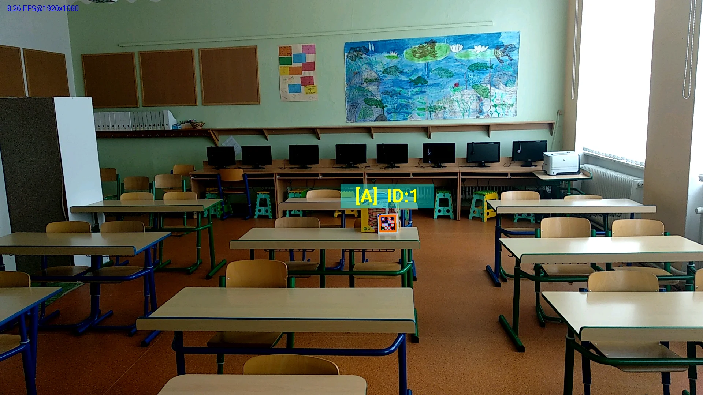
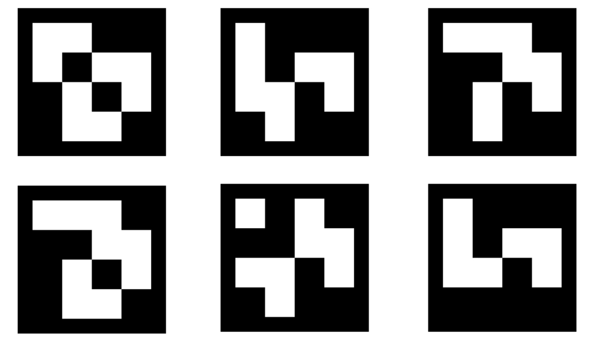
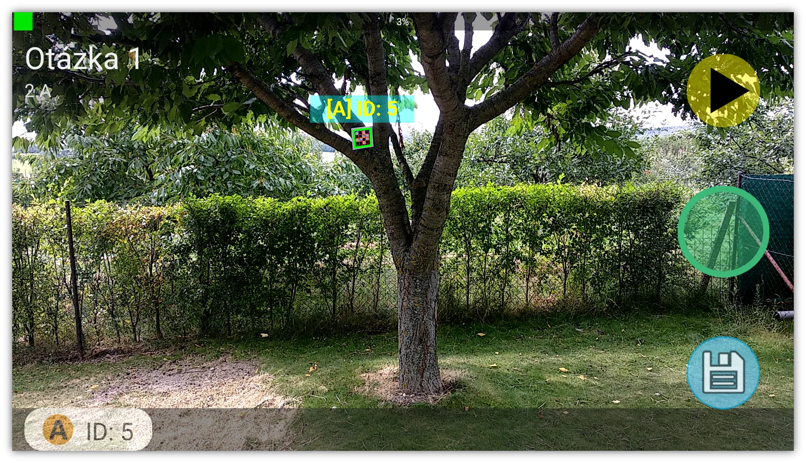

iBees
Quizzing tool for Czech primary schools, built around a custom real-time matrix barcode detection system. Students scan physical cards with their device camera to answer quiz questions, making classroom interaction more engaging. Developed solo using Java for Android and the OpenCV library.
Development was halted due to lack of government funding, but the working prototype demonstrated reliable real-time custom barcode recognition.
The app uses the device camera and a custom OpenCV-based pipeline to detect and decode matrix barcodes in real time. Teachers set up quiz sessions, students answer by showing the bar code oriented such that their answer is at the top (A,B,C,D style questions), and results are scanned back by the teacher's device. The app POC was developed and it's functionality was successfully demonstrated on a sample real-world audience.
Solo/full ownership of product design, Android development, and the custom OpenCV-based matrix barcode detection pipeline.


